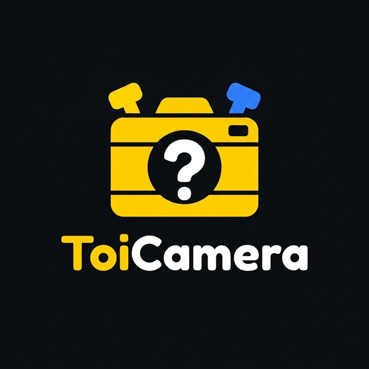
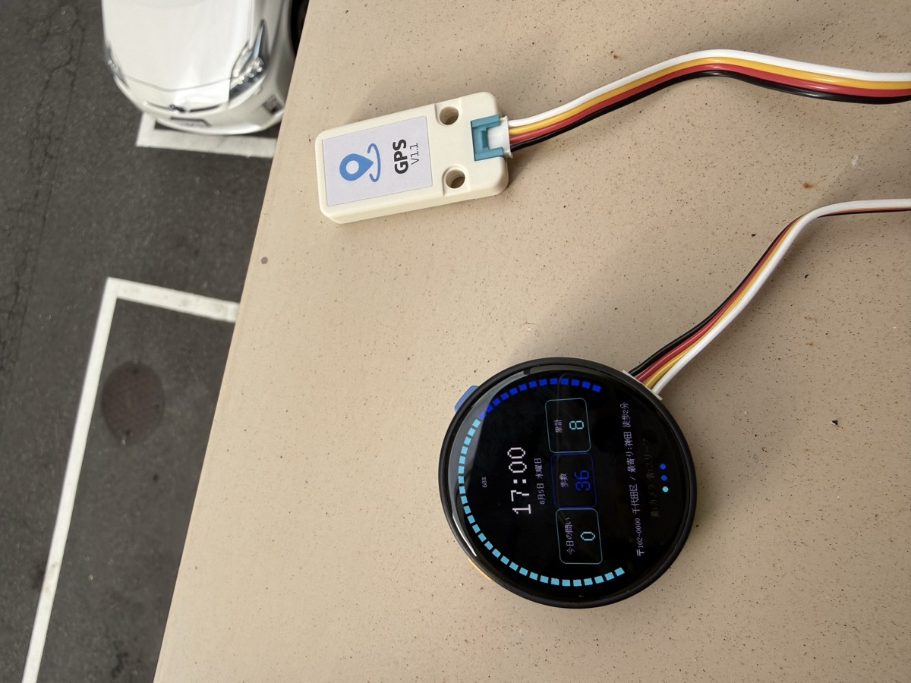

Toi (問い) is Japanese for a question — and it sounds like toy. A wrist-worn AI camera you ask questions with: point, shoot, and it explains the world — on screen and out loud. Toi(問い)は英語の toy と同じ響き。 「撮って、問いかける」腕時計型 AI カメラです。向けてシャッターを押せば、 写ったものを画面と音声で解説してくれます。 Toi(問い)在日语中意为「提问」，发音又像 toy(玩具)。 这是一台可以「提问」的腕戴式 AI 相机:对准、拍摄，它就会用屏幕和语音为你解说世界。

The live finder frame is the photo — no capture delay, what you see is what you shot.ファインダーに映っているフレームがそのまま写真に。遅延ゼロ、見たままが撮れます。取景器画面就是照片本身 — 没有拍摄延迟,所见即所得。
AI explanations in Animal-Crossing-style chirps, or real TTS with a voice your Worker defines.どうぶつの森風のピコピコ音声、または Worker で指定した声の TTS で AI が解説します。AI 解说可选「动森风」哔哔声,或由你的 Worker 指定音色的真人 TTS。
Hold the yellow button and ask about the photo — STT, context-aware answer, spoken back.黄ボタン長押しで写真について質問。音声認識→文脈を踏まえた回答→読み上げまで一気通貫。长按黄色按键即可就照片提问 — 语音识别、结合上下文回答、并朗读出来。
GPS + reverse geocoding: town-level location, nearest station, place-flavored explanations.GPS+逆ジオコーディングで市区町村・最寄り駅を表示。場所を踏まえた解説も。GPS + 逆地理编码:显示所在城镇、最近车站,解说也会带上地点味道。
日本語 / English / 中文 — UI and AI content switch together, right on ToiCamera.日本語 / English / 中文 — UI も AI の解説も、ToiCameraの上でまとめて切替。日本語 / English / 中文 — UI 和 AI 内容在ToiCamera上一键同步切换。
3D-printed backpack plate; camera & GPS clip anywhere, LEGO Technic pin pitch.3D プリントの背面プレート。カメラも GPS もレゴテクニックピッチで好きな位置に。3D 打印背板,相机与 GPS 可按乐高科技件孔距任意夹装。
ToiCamera ships with no shared server. You deploy a small Cloudflare Worker under your own account — it holds your API keys, defines the model menu ToiCamera shows in Settings, picks the TTS voice, and can even route to a local LLM running on your own machine through a Cloudflare Tunnel. The firmware never hardcodes a model name. ToiCamera に共有サーバーはありません。小さな Cloudflare Worker を 自分のアカウントにデプロイし、そこに API キーを保管。ToiCameraの設定に出てくる モデルメニューも Worker 側で定義でき、TTS の声も選べて、Cloudflare Tunnel 経由なら 母艦 PC のローカル LLM にもつなげます。ファームにモデル名は一切ハードコードされていません。 ToiCamera 没有共享服务器。你在自己的账号下部署一个小小的 Cloudflare Worker — 它保管你的 API 密钥、定义ToiCamera设置里的模型菜单、 选择 TTS 音色,甚至能通过 Cloudflare Tunnel 连接运行在你自己电脑上的本地 LLM。 固件从不硬编码任何模型名。
Deploy your own AI relay in ~10 minutes: keys, device token, model menu, local LLM.約10分で自分の AI 中継サーバーをデプロイ。キー・デバイストークン・モデルメニュー・ローカル LLM まで。约 10 分钟部署你自己的 AI 中继:密钥、设备令牌、模型菜单、本地 LLM。
Read the guide →ガイドを読む →阅读指南 →Print settings, M2 screws and unit mounting with real photos (Japanese).3D プリントプレートの印刷設定・M2 ネジ・CLIP でのユニット取付(実写真つき)。打印参数、M2 螺丝与单元安装,附实拍照片(日文)。
Read the guide →ガイドを読む →阅读指南 →Grove splitter harness for using the camera and GPS at the same time (Japanese).カメラ+GPS 同時使用のための Grove 分岐ハーネスの作り方。同时使用相机与 GPS 的 Grove 分线束制作方法(日文)。
Read the guide →ガイドを読む →阅读指南 →Grove pinout facts and hardware constraints discovered on real devices.実機検証で判明した Grove ピン配置とハードの制約集。实机验证得到的 Grove 引脚与硬件限制。
Read the notes →メモを読む →阅读笔记 →Architecture, state machine and API contracts — the canonical doc (Japanese).アーキテクチャ・状態遷移・API 契約の正典(日本語)。架构、状态机与 API 契约的正典(日文)。
Read the doc →設計書を読む →阅读文档 →| Partパーツ部件 | Role役割作用 |
|---|---|
| M5Stack StopWatch Dev Kit (ESP32-S3, C152)M5Stack StopWatch Dev Kit(ESP32-S3, C152)M5Stack StopWatch Dev Kit(ESP32-S3, C152) | ToiCamera — 466×466 round AMOLED, buttons, mic, speaker, RTC, IMUToiCamera本体 — 466×466 円形 AMOLED・ボタン・マイク・スピーカー・RTC・IMUToiCamera本体 — 466×466 圆形 AMOLED、按键、麦克风、扬声器、RTC、IMU |
| M5Stack Unit CamS3 (5 MP)M5Stack Unit CamS3(5 MP)M5Stack Unit CamS3(5 MP) | Camera — joins ToiCamera's own SoftAP, custom STA-server firmwareカメラ — ToiCamera自身の SoftAP に接続。カスタム STA サーバー FW相机 — 接入ToiCamera自建的 SoftAP,运行定制 STA 服务器固件 |
| M5Stack Unit GPS v1.1M5Stack Unit GPS v1.1M5Stack Unit GPS v1.1 | Location — NMEA over Grove, shares the port via a Y-cable位置情報 — Grove 経由 NMEA。Y 字ケーブルでポートを共用定位 — 通过 Grove 输出 NMEA,经 Y 型线共享端口 |
| M5Stack CLIP-BM5Stack CLIP-BM5Stack CLIP-B | Official Unit clip (LEGO-compatible holes) — holds the CamS3 on the plate, no glue or screws純正ユニットクリップ(レゴ互換穴)— CamS3 をプレートに固定。接着剤・ネジ不要官方 Unit 固定夹(乐高兼容孔)— 把 CamS3 固定在背板上,无需胶水或螺丝 |
| 3D-printed back plate3D プリント背面プレート3D 打印背板 | LEGO-compatible mount for both units (print guide)両ユニットをレゴ互換で固定(印刷ガイド)乐高兼容,固定两个单元(打印指南) |
Entry for the M5Stack Global Innovation Contest 2026.M5Stack Global Innovation Contest 2026 応募作品。M5Stack Global Innovation Contest 2026 参赛作品。